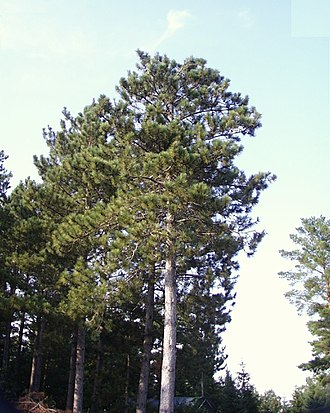

Az észak-amerikai erdőkben a Vörösfenyő (Pinus resinosa) egy igazi keményfa, amely hosszú életű és széles körben használják az építőiparban, bútoriparban és papíriparban. A faj jellegzetes vörösesbarna kérgével és tűleveleivel kiemelkedik az erdők többi fája közül. Az alábbiakban bemutatjuk a Vörösfenyő jellemzőit és tulajdonságait, valamint a faj hasznosítását és fenntarthatóságát.
A Vörösfenyő (Pinus resinosa) az észak-amerikai kontinensen, Kanadától az Egyesült Államok északi és középső részéig elterjedt. A fa magassága akár 30 méter is lehet, és törzse akár 1 méter átmérőjű is lehet. A fa kérge vörösesbarna és barázdált, ami megkönnyíti a faj felismerését az erdőben. A tűlevelek hosszúak és vékonyak, és jellegzetes két tű egy csoportban áll.
A Vörösfenyő nagyon ellenálló a kártevőknek és a betegségeknek, és gyorsan növekszik az észak-amerikai erdők többi fájához képest. A faj jellemzően tűzoltások és erdőtüzek után terjed, mivel a magvak csak akkor tudnak csírázni, ha a tűz megsemmisítette az erdő talaján lévő növényeket és anyagokat.
A Vörösfenyő faanyaga erős és tartós, és ezért széles körben használják az építőiparban, bútoriparban és papíriparban. A fa magas minősége miatt az észak-amerikai erdőkben évente több millió köbméter Vörösfenyőt termelnek.
Annak ellenére, hogy a Vörösfenyőt széles körben használják, az észak-amerikai erdőket fenntarthatóan kezelik, hogy megőrizzék az erdők életképességét és a fajok sokféleségét.

forrás: Wikipédia